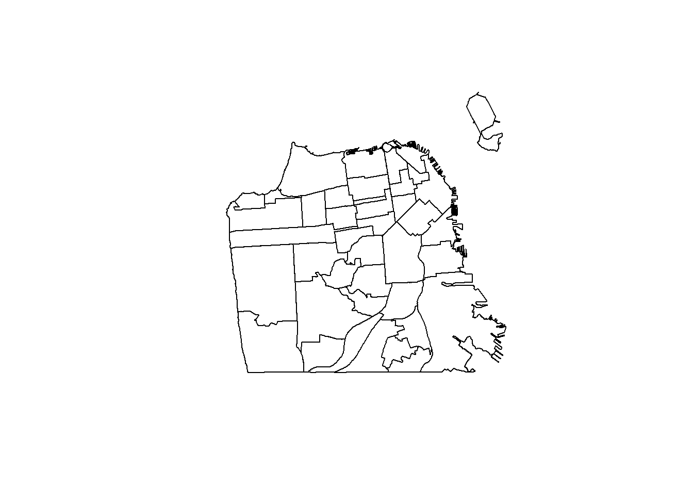
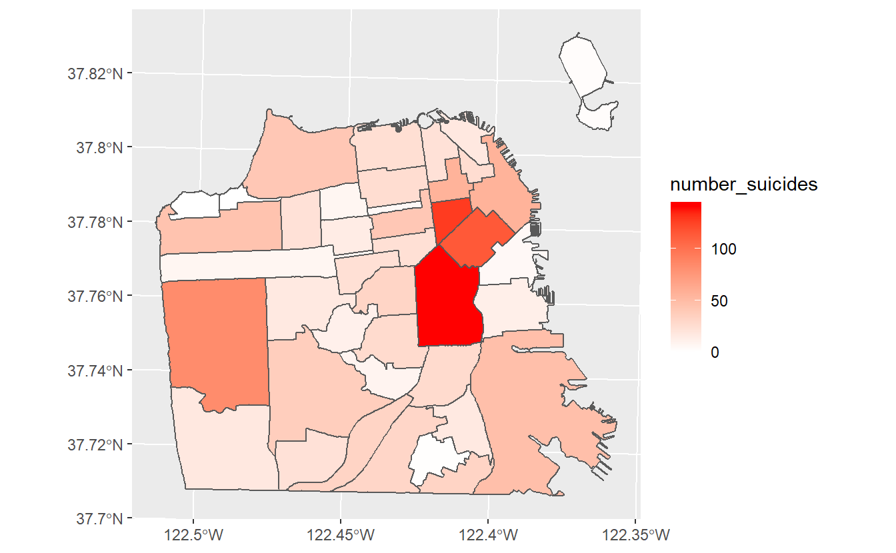
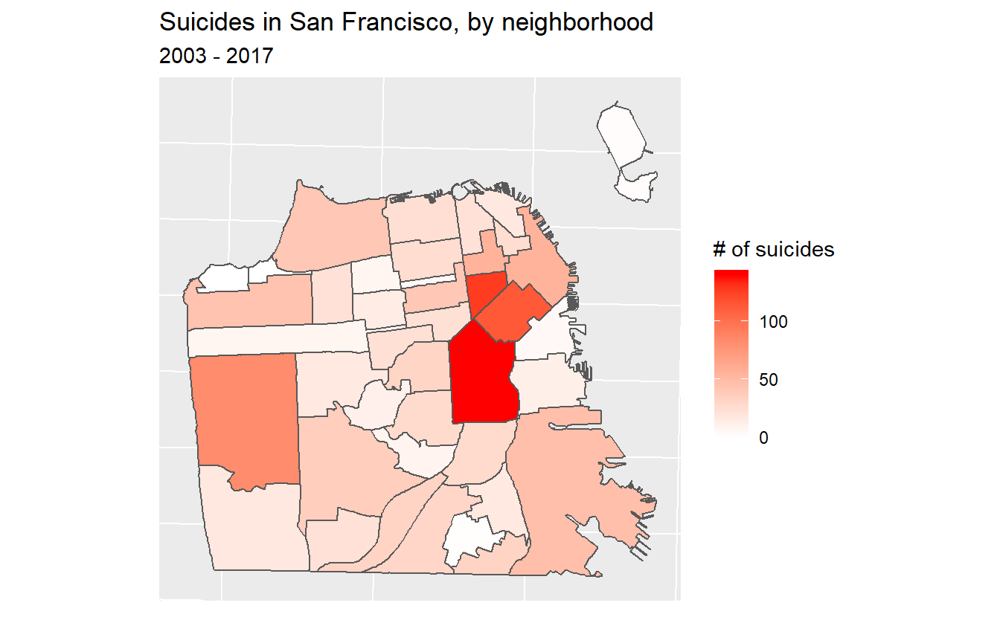

15 Choropleth Maps
In Chapter 14 we made hotspot maps to show which areas in Philadelphia had the most officer-involved shootings. We made the maps in a number of ways and consistently found that shootings were most prevalent in north and west Philly. In this lesson we will make choropleth maps, which are shaded maps where each “unit” is some known area such as a state or neighborhood. Think of election maps where states are colored blue when a Democratic candidate wins that state and red when a Republican candidate wins. These are choropleth maps - each state is colored to indicate something. In this lesson we will continue to work on the officer-involved shooting data and make choropleth maps shaded by the number of shootings in each Census tract (we will define this later in the lesson) in the city.
Since we will be working more on the geocoded version of the police shooting data, let’s load it now.
load("data/officer_shootings_geocoded.rda")The package that we will use to handle geographic data and do most of the work in this lesson is sf. sf is a sophisticated package and does far more than we will cover in this lesson. For more information about the package’s features please see the website for it here.
install.packages("sf")library(sf)
#> Linking to GEOS 3.6.1, GDAL 2.2.3, PROJ 4.9.3The way sf reads in the shapefiles is through the st_read() function. A shapefile is simialr to a data.frame but has information on how to draw a geographic boundary such as a state. Our input inside the () is a string with the name of the “.shp” file we want to read in (since we are telling R to read a file on the computer rather than an object that exists, it needs to be in quotes). This shapefile contains Census tracts for Philly so we’ll call the object “philly_tracts”.
philly_tracts <- st_read("data/philly_census_tract/Census_Tracts_2010.shp")
#> Reading layer `Census_Tracts_2010' from data source `C:\Users\user\Dropbox\R_project\r4crim\data\philly_census_tract\Census_Tracts_2010.shp' using driver `ESRI Shapefile'
#> Simple feature collection with 384 features and 14 fields
#> geometry type: MULTIPOLYGON
#> dimension: XY
#> bbox: xmin: -75.28031 ymin: 39.86747 xmax: -74.95575 ymax: 40.13793
#> epsg (SRID): 4326
#> proj4string: +proj=longlat +datum=WGS84 +no_defsNote that when we downloaded the data, it came with multiple files (some with extensions .cpg, .dbf, etc) but we only have the file with the .shp extension inside of st_read(). We still do need all of the files and st_read() is using them even if not explicitly called. So make sure every file downloaded is in the same working directory as the .shp file.
As usual when dealing with a new data set, let’s look at the first 6 rows.
head(philly_tracts)
#> Simple feature collection with 6 features and 14 fields
#> geometry type: MULTIPOLYGON
#> dimension: XY
#> bbox: xmin: -75.24747 ymin: 39.96047 xmax: -75.15853 ymax: 39.98
#> epsg (SRID): 4326
#> proj4string: +proj=longlat +datum=WGS84 +no_defs
#> OBJECTID STATEFP10 COUNTYFP10 TRACTCE10 GEOID10 NAME10
#> 1 1 42 101 009400 42101009400 94
#> 2 2 42 101 009500 42101009500 95
#> 3 3 42 101 009600 42101009600 96
#> 4 4 42 101 013800 42101013800 138
#> 5 5 42 101 013900 42101013900 139
#> 6 6 42 101 014000 42101014000 140
#> NAMELSAD10 MTFCC10 FUNCSTAT10 ALAND10 AWATER10 INTPTLAT10
#> 1 Census Tract 94 G5020 S 366717 0 +39.9632709
#> 2 Census Tract 95 G5020 S 319070 0 +39.9658709
#> 3 Census Tract 96 G5020 S 405273 0 +39.9655396
#> 4 Census Tract 138 G5020 S 341256 0 +39.9764504
#> 5 Census Tract 139 G5020 S 562934 0 +39.9750563
#> 6 Census Tract 140 G5020 S 439802 0 +39.9735358
#> INTPTLON10 LOGRECNO geometry
#> 1 -075.2322437 10429 MULTIPOLYGON (((-75.22927 3...
#> 2 -075.2379140 10430 MULTIPOLYGON (((-75.23536 3...
#> 3 -075.2435075 10431 MULTIPOLYGON (((-75.24343 3...
#> 4 -075.1771771 10468 MULTIPOLYGON (((-75.17341 3...
#> 5 -075.1711846 10469 MULTIPOLYGON (((-75.17313 3...
#> 6 -075.1630966 10470 MULTIPOLYGON (((-75.16141 3...The last column is important. In shapefiles the “geometry” column is the one with the instructions to make the map. This data has a single row for each Census tract in the city. So the “geometry” column in each row have a list of coordinates which, if connected in order, make up that tract. Since the “geometry” column contains the instructions to map, we can plot() it to show a map of the data.
plot(philly_tracts$geometry)
Here we have a map of Philadelphia broken up into little pieces. These pieces are Census tracts. Census tracts are small areas in a city with about 2,500-8,000 people and are used by the U.S. Census Bureau as a rough approximation of a neighborhood.
In the head() results there was a section about something called “epsg” and “proj4string”. Let’s talk about that specifically since they are important for working with spatial data. A way to get just those two results in the st_crs() function which is part of sf. Let’s extract the “coordinate reference system” (CRS) for philly_tracts.
st_crs(philly_tracts)
Coordinate Reference System:
EPSG: 4326
proj4string: "+proj=longlat +datum=WGS84 +no_defs"An issue with working with geographic data is that the Earth is not flat. Since the Earth is spherical, there will always be some distortion when trying to plot the data on a flat surface such as a map. To account for this we need to transform the longitude and latitude values we generally have to work properly on a map. We do so by “projecting” our data onto the areas of the Earth we want. This is a complex field with lots of work done on it (both abstractly and for R specifically) so this lesson will be an extremely brief overview of the topic and oversimplify some aspects of it.
If we look at the output of st_crs(philly_tracts) we can see that the EPSG is set to 4326 and the proj4string (which ittells us the current map projection) is “+proj=longlat +datum=WGS84 +no_defs”. This CRS, WGS84, is a standard CRS and is the one used whenever you use a GPS to find a location. To find the CRS for certain parts of the world see here. If you search that site for Pennsylvania you’ll see that Pennsylvania South is assigned 2272 which is what we will use to project this data properly.
If we want to get the proj4string for 2272 we can use
st_crs(2272)
#> Coordinate Reference System:
#> EPSG: 2272
#> proj4string: "+proj=lcc +lat_1=40.96666666666667 +lat_2=39.93333333333333 +lat_0=39.33333333333334 +lon_0=-77.75 +x_0=600000 +y_0=0 +ellps=GRS80 +towgs84=0,0,0,0,0,0,0 +units=us-ft +no_defs"Note the section that says “+units=us-ft”. This means that the units are in feet. Some projections have units in meters so be mindful of this when doing some analysis such as seeing if a point is within X feet of a certain area.
Let’s convert our philly_tracts data to coordinate reference system 2272 which is the one assigned to southern Pennsylvania, an area that includes Philadelphia.
philly_tracts <- st_transform(philly_tracts, crs = 2272)
st_crs(philly_tracts)
Coordinate Reference System:
EPSG: 2272
proj4string: "+proj=lcc +lat_1=40.96666666666667 +lat_2=39.93333333333333 +lat_0=39.33333333333334 +lon_0=-77.75 +x_0=600000 +y_0=0 +ellps=GRS80 +towgs84=0,0,0,0,0,0,0 +units=us-ft +no_defs"15.1 Spatial joins
What we want to do with these Census tracts is to find out which tract each shooting occurred in and sum up the number of shootings per tract. Once we do that we can make a more accurate hotspot map by mapping at the Census tract level and being able to measure shootings-per-tract. A spatial join is very similar to regular joins where we merge two data sets based on common variables (such as state name or unique ID code of a person). In this case it merges based on some shared geographic feature such as if two lines intersect or (as we will do so here) if a point is within some geographic area.
Right now our “officer_shootings_geocoded” data is in a data.frame with some info on each shootings and the longitude and latitude of the shooting in separate columns. We want to turn this data.frame into a spatial object to allow us to find which tract each shooting happened in. We can convert it into a spatial object using the st_as_sf() function from sf. Our input is first our data, officer_shootings_geocoded. Then in the coords parameter we put a vector of the column names so the function knows which columns are the longitude and latitude columns to convert to a “geometry” column like we saw in “philly_tracts” earlier. We’ll set the CRS to be the WGS84 standard we saw earlier but we will change it to match the CRS that the Census tract data has.
officer_shootings_geocoded <- st_as_sf(officer_shootings_geocoded,
coords = c("lon", "lat"),
crs = "+proj=longlat +ellps=WGS84 +no_defs")We want our shootings data in the same projection as the tracts data so we need to use st_transform() to change the projection. Since we want the CRS to be the same as in “philly_tracts”, we can set it using st_crs(philly_tracts) to use the right CRS.
officer_shootings_geocoded <- st_transform(officer_shootings_geocoded,
crs = st_crs(philly_tracts))Now we can take a look at head() to see if it was projected.
head(officer_shootings_geocoded)
#> Simple feature collection with 6 features and 3 fields
#> geometry type: POINT
#> dimension: XY
#> bbox: xmin: 2677481 ymin: 226464.5 xmax: 2706666 ymax: 253839.1
#> epsg (SRID): 2272
#> proj4string: +proj=lcc +lat_1=40.96666666666667 +lat_2=39.93333333333333 +lat_0=39.33333333333334 +lon_0=-77.75 +x_0=600000 +y_0=0 +ellps=GRS80 +towgs84=0,0,0,0,0,0,0 +units=us-ft +no_defs
#> shooting_number location dates
#> 1 19-04 4900 Hazel Avenue, Philadelphia, PA 2019-03-06
#> 2 19-06 1300 Kater Street, Philadelphia, PA 2019-03-28
#> 4 19 11 2100 Taney Terrace, Philadelphia, PA 2019-04-25
#> 5 19-13 1800 N. Broad Street, Philadelphia, PA 2019-05-11
#> 6 19 14 3400 G Street, Philadelphia, PA 2019-05-20
#> 7 18-01 2800 Kensington Avenue, Philadelphia, PA 2018-01-13
#> geometry
#> 1 POINT (2677481 234962.8)
#> 2 POINT (2693626 232671.6)
#> 4 POINT (2686095 226464.5)
#> 5 POINT (2694910 246343.1)
#> 6 POINT (2706666 253839.1)
#> 7 POINT (2704596 250717)We can see it is now a “simple feature collection” with the correct projection. And we can see there is a new column called “geometry” just like in “philly_tracts”. The type of data in “geometry” is POINT since our data is just a single location instead of a polygon like in the tracts data.
Since we have both the tracts and the shootings data let’s make a quick map to see the data.
plot(philly_tracts$geometry)
plot(officer_shootings_geocoded$geometry, add = TRUE, col = "red")
Our next step is to combine these two data sets to figure out how many shootings occurred in each Census tract. This will be a multi-step process so let’s plan it out before beginning. Our shooting data is one row for each shooting, our tract data is one row for each tract. Since our goal is to map at the tract-level we need to get the tract where each shooting occurred then aggregate up to the tract-level to get a count of the shootings-per-tract. Then we need to combine that with that the original tract data (since we need the “geometry” column) and we can then map it.
- Find which tract each shooting happened in
- Aggregate shooting data until we get one row per tract and a column showing the number of shootings in that tract
- Combine with the Census tract data
- Make a map
We’ll start by finding the tract where each shooting occurred using the function st_join() which is a function in sf. This does a spatial join and finds the polygon where each point is located in. Since we will be aggregating the data let’s call the output of this function “shootings_agg”. The order in the () is important! For our aggregation we want the output to be at the shooting-level so we start with the “officer_shootings_geocoded” data. In the next step we’ll see why this matters.
shootings_agg <- st_join(officer_shootings_geocoded, philly_tracts)Let’s look at the first 6 rows.
head(shootings_agg)
#> Simple feature collection with 6 features and 17 fields
#> geometry type: POINT
#> dimension: XY
#> bbox: xmin: 2677481 ymin: 226464.5 xmax: 2706666 ymax: 253839.1
#> epsg (SRID): 2272
#> proj4string: +proj=lcc +lat_1=40.96666666666667 +lat_2=39.93333333333333 +lat_0=39.33333333333334 +lon_0=-77.75 +x_0=600000 +y_0=0 +ellps=GRS80 +towgs84=0,0,0,0,0,0,0 +units=us-ft +no_defs
#> shooting_number location dates
#> 1 19-04 4900 Hazel Avenue, Philadelphia, PA 2019-03-06
#> 2 19-06 1300 Kater Street, Philadelphia, PA 2019-03-28
#> 4 19 11 2100 Taney Terrace, Philadelphia, PA 2019-04-25
#> 5 19-13 1800 N. Broad Street, Philadelphia, PA 2019-05-11
#> 6 19 14 3400 G Street, Philadelphia, PA 2019-05-20
#> 7 18-01 2800 Kensington Avenue, Philadelphia, PA 2018-01-13
#> OBJECTID STATEFP10 COUNTYFP10 TRACTCE10 GEOID10 NAME10
#> 1 208 42 101 007900 42101007900 79
#> 2 33 42 101 001500 42101001500 15
#> 4 198 42 101 003600 42101003600 36
#> 5 384 42 101 037700 42101037700 377
#> 6 21 42 101 019200 42101019200 192
#> 7 172 42 101 017702 42101017702 177.02
#> NAMELSAD10 MTFCC10 FUNCSTAT10 ALAND10 AWATER10 INTPTLAT10
#> 1 Census Tract 79 G5020 S 377950 0 +39.9504630
#> 2 Census Tract 15 G5020 S 239383 0 +39.9419037
#> 4 Census Tract 36 G5020 S 964539 0 +39.9279255
#> 5 Census Tract 377 G5020 S 736894 0 +39.9824381
#> 6 Census Tract 192 G5020 S 656913 0 +40.0006393
#> 7 Census Tract 177.02 G5020 S 489258 0 +39.9950621
#> INTPTLON10 LOGRECNO geometry
#> 1 -075.2182570 10410 POINT (2677481 234962.8)
#> 2 -075.1591158 10356 POINT (2693626 232671.6)
#> 4 -075.1920206 10377 POINT (2686095 226464.5)
#> 5 -075.1506932 10694 POINT (2694910 246343.1)
#> 6 -075.1150648 10519 POINT (2706666 253839.1)
#> 7 -075.1231399 10509 POINT (2704596 250717)There are now columns from the Census tracts data which says which tract the shooting happened in. Now we can aggregate up to the tract-level. We just need to aggregate by a unique variable indicating which tract it is, we will then use this to merge with the “philly_tracts” data. Let’s look specifically at the “GEOID10” variable since that is actually important and common in dealing with Census data. And let’s also print out the columns “STATEFP10”, “COUNTYFP10”, and “TRACTCE10”.
head(shootings_agg[, c("STATEFP10", "COUNTYFP10", "TRACTCE10", "GEOID10")])
#> Simple feature collection with 6 features and 4 fields
#> geometry type: POINT
#> dimension: XY
#> bbox: xmin: 2677481 ymin: 226464.5 xmax: 2706666 ymax: 253839.1
#> epsg (SRID): 2272
#> proj4string: +proj=lcc +lat_1=40.96666666666667 +lat_2=39.93333333333333 +lat_0=39.33333333333334 +lon_0=-77.75 +x_0=600000 +y_0=0 +ellps=GRS80 +towgs84=0,0,0,0,0,0,0 +units=us-ft +no_defs
#> STATEFP10 COUNTYFP10 TRACTCE10 GEOID10 geometry
#> 1 42 101 007900 42101007900 POINT (2677481 234962.8)
#> 2 42 101 001500 42101001500 POINT (2693626 232671.6)
#> 4 42 101 003600 42101003600 POINT (2686095 226464.5)
#> 5 42 101 037700 42101037700 POINT (2694910 246343.1)
#> 6 42 101 019200 42101019200 POINT (2706666 253839.1)
#> 7 42 101 017702 42101017702 POINT (2704596 250717)The GEOID10 column is a unique identifier for the Census tracts in Philly. It is made up by a few other identifiers at higher geographic levels. All of the GEOID10s here start with the numbers 42 followed by 101. The first two numbers are the state identifiers code, 42, based on Census FIPS codes. FIPS stands for Federal Information Processing Standard and are unique geographic identifiers used in Census data. These codes are used to merge different data sets (e.g. FBI crime data and Census data) together, a task that would be impossible (or very difficult) without a unique ID code in both data sets. The 101 is the county code, as seen in the column “COUNTYFP10”. The remaining numbers vary and indicate which tract it is. When combined it makes an 11 number code that is not repeated for any Census tract in the country. We will return to this code when combining this data with Census data.
For now we will use the code to aggregate the number of shootings per Census tract. Remember, the aggregate() command aggregates a numeric value by some categorical value. Here we aggregate the number of shootings per Census tract. So our code will be
aggregate(number_shootings ~ GEOID10, data = shootings_agg, FUN = sum)
We actually don’t have a variable with the number of shootings so we need to make that. We can simply call it “number_shootings” and give it that value of 1 since each row is only one shooting.
shootings_agg$number_shootings <- 1Now we can write the aggregate() code and save the results back into “shootings_agg”.
shootings_agg <- aggregate(number_shootings ~ GEOID10, data = shootings_agg, FUN = sum)Let’s check a summary of the “number_shootings” variable we made.
summary(shootings_agg$number_shootings)
#> Min. 1st Qu. Median Mean 3rd Qu. Max.
#> 1.000 1.000 2.000 2.152 3.000 9.000The minimum is one shooting per tract, two on average, and 9 in the tract with the most shootings. So what do we make of this data? Well, there are some data issues that cause problems in these results. First, we know that shootings that didn’t get geocoded properly were given the coordinates of City Hall, likely making up that tract with 9 shootings. And then let’s think about the minimum value. Did every single tract in the city have at least one shooting? No, take a look at the number of rows in this data, keeping in mind there should be one row per tract.
nrow(shootings_agg)
#> [1] 204And let’s compare it to the “philly_tracts” data.
nrow(philly_tracts)
#> [1] 384The shootings data is missing about 180 tracts. That is because if no shooting occurred there, there would never be a matching row in the data so that tract wouldn’t appear in the shooting data. That’s not going to be a major issue here but is something to keep in mind in future research. And given the sensitivity of this issue, is a good reason to carefully check your data before make any conclusions.
The data is ready to merge with the “philly_tracts” data. We’ll introduce a new function that makes merging data simple. This function comes from the dplyr package so we need to install and tell R we want to use it using library().
install.packages("dplyr")library(dplyr)
#>
#> Attaching package: 'dplyr'
#> The following objects are masked from 'package:stats':
#>
#> filter, lag
#> The following objects are masked from 'package:base':
#>
#> intersect, setdiff, setequal, unionThe function we will use is left_join() which takes two parameters, the two data sets to join together.
left_join(data1, data2)
This function joins these data and keeps all of the rows from the left data and every column from both data sets. It combines the data based on any matching columns (matching meaning same column name) in both data sets. Since in our data sets, the column “GEOID10” exists in both, it will merge the data based on that column.
There are two other functions that are similar but differ based on which rows they keep.
- left_join - All rows from Left data and all columns from Left and Right data
- right_join - All rows from Right data and all columns from Left and Right data
- full_join - All rows and all columns from Left and Right data
We could alternatively use the merge() function which is built into R but that function is slower than the dplyr functions and requires us to manually set the matching columns.
We want to keep all rows in “philly_tracts” (keep all tracts) so we can use left_join(philly_tracts, shootings_agg). Let’s save the results into a new data.frame called “philly_tracts_shootings”.
philly_tracts_shootings <- left_join(philly_tracts, shootings_agg)
#> Joining, by = "GEOID10"If we look at summary() again for “number_shootings” we can see that there are now 180 rows with NAs. These are the tracts where there were no shootings so they weren’t present in the “shootings_agg” data.
summary(philly_tracts_shootings$number_shootings)
#> Min. 1st Qu. Median Mean 3rd Qu. Max. NA's
#> 1.000 1.000 2.000 2.152 3.000 9.000 180We need to convert these values to 0. We will use the is.na() function to conditionally find all rows with a NA value in the “number_shootings” column and use square bracket notation to change the value to 0.
philly_tracts_shootings$number_shootings[is.na(philly_tracts_shootings$number_shootings)] <- 0Checking it again we see that the minimum is now 0 and the mean number of shootings drops to about 1.1 per tract.
summary(philly_tracts_shootings$number_shootings)
#> Min. 1st Qu. Median Mean 3rd Qu. Max.
#> 0.000 0.000 1.000 1.143 2.000 9.00015.2 Making choropleth maps
Finally we are ready to make some choropleth maps.
For these maps we are going to use ggplot2 again so we need to load it.
library(ggplot2)ggplot2’s benefit is you can slowly build graphs or maps and improve the graph at every step. Earlier we used functions such as geom_line() for line graphs and geom_point() for scatter plots. For mapping these polygons we will use geom_sf() which knows how to handle spatial data.
As usual we will start with ggplot(), inputting our data first. Then inside of aes (the aesthetics of the graph/map) we use a new parameter fill. In fill we will put in the “number_shootings” column and it will color the polygons (tracts) based on values in that column. Then we can add the geom_sf().
ggplot(philly_tracts_shootings, aes(fill = number_shootings)) +
geom_sf() 
We have now created a choropleth map showing the number of shootings per Census tract in Philly! Based on the legend tracts that are light blue have the most shootings while tracts that are dark blue have the fewest (or none at all). Normally we’d want the opposite, with darker (or brighter) areas signifying a greater amount of whatever the map is showing.
We can use scale_fill_gradient() to set the colors to what we want. We input a color for low value and a color for high value and it’ll make the map shade by those colors.
ggplot(philly_tracts_shootings, aes(fill = number_shootings)) +
geom_sf() +
scale_fill_gradient(low = "white", high = "red") 
This gives a much better map and clearly shows the areas where shootings are most common and where there were no shootings.
To make this map easier to read and look better, let’s add a title to the map and to the legend.
ggplot(philly_tracts_shootings, aes(fill = number_shootings)) +
geom_sf() +
scale_fill_gradient(low = "white", high = "red") +
labs(fill = "# of Police Shootings",
title = "Police Shootings in Philadelphia by Census Tract",
subtitle = "January 2007 - mid-2019") 
Since the coordinates don’t add anything to the map, let’s get rid of them.
ggplot(philly_tracts_shootings, aes(fill = number_shootings)) +
geom_sf() +
scale_fill_gradient(low = "white", high = "red") +
labs(fill = "# of Police Shootings",
title = "Police Shootings in Philadelphia by Census Tract",
subtitle = "January 2007 - mid-2019") +
theme(axis.text.x = element_blank(),
axis.text.y = element_blank(),
axis.ticks = element_blank())
We’ll return to this data in Section 16.5 for the lesson on interactive maps so we need to save it.
save(philly_tracts_shootings, file = "data/philly_tracts_shootings.rda")